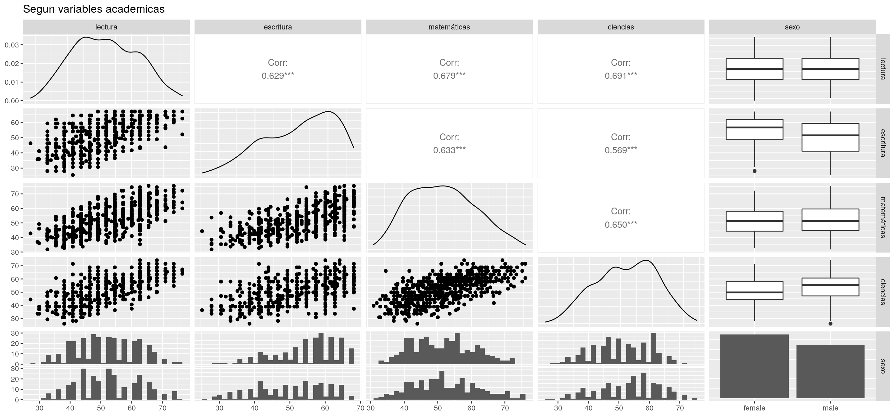

1 CLASE 1 - Conceptos generales, ejemplos de casos y nociones de lenguajes de programación
1.1 Interacción con terminales
La terminal es una herramienta que nos permite comunicarnos directamente con la computadora para ejecutar acciones complejas en unos pocos comandos. En si, es similar a como trabajamos con lenguajes interpretados como R, en el sentido de que enviamos comandos y recibimos respuestas (casi) inmediatas.
Dependiendo de en que sistema nos encontramos, tenemos distintas SHELLs que interpretan los comandos, siguiendo una sintaxis u otra, con distintos niveles de ayuda al usuario.
Por conveniencia, usaremos principalmente BASH, que es la SHELL mas comun encontrada en entornos Linux, que a su vez son los mas comunes en tareas de programacion para datascience y bioinformatica.
Es posible instalar un entorno Linux en Windows usando WSL ([[Windows-Subsystem-for-Linux]]).
La mayor parte de estos comandos existen tanto en Linux como en Windows Powershell (aunque en este ultimo realmente son alias).
La principal diferencia es como las shells manejan directorios, con / en POSIX y \ en Windows;
y como manejan comandos multilinea, \ y ` respectivamente.
La parte más compleja y menos interoperable es cuando usamos comandos con -parametros.
1.1.2 Descargando archivos
curles C (see) URL, mapeado a Invoke-WebRequest en Powershell.curl <url> -o <archivo>descarga una URL para guardarla en un archivocurl -O <url>descarga la URL a un archvio con su nombre. Usualmente usamos esto
wgetes Web GET, mapeado a Invoke-WebRequest en Powershell. Es el más facil de usar.wget <url> <url2…>descarga la URL a un archvio con su nombrewget -c <url>permite continuar una descarga interrumpida (muy util para cosas de varios GB)
Invoke-WebRequestrequiere un output explicito.Invoke-WebRequest <url> -OutFile <archivo>Invoke-WebRequest <url> -Method Get -o <archivo>funciona igual que Wgetcurl <url> -o <archivo>es valido en Windows base
wget "https://pseudo-dropbox.s3-us-west-2.amazonaws.com/Alejandro/baselines.tar.gz" # Descargando un ejemplo1.1.3 Descomprimiendo archivos
tar, no existe en Windows.… xf …son parametros para eXtract y Filetar xf <tar.gz.bz2.xz>desempaca un tar (comprimido) al directorio localtar xf <tar.gz.bz2.xz> -C <directorio>desempaca el tar a un directorio especifico- Los tar por defecto no están comprimidos. Un tar.gz si lo está.
tar cf <nuevo.tar> <archivo1 directorio/*>crea un archivo tar.tar cgf <nuevo.tar.gz> <archivo1 directorio/*>crea un archivo tar comprimido.
unzip, no existe en Windows.unzip <zip>extrae los contenidos de un zip en el directorio actualunzip <zip> -d <directorio>extrae el zip a una carpeta especificazip -r <nuevo.zip> <directorio>comprime un directorio a un zip.
Expand-Archivees una utilidad de Windows que funciona comounzipExpand-Archive <zip> <directorio>descomprime un zip en un directorio existente o nuevoCompress-Archive -Path <directorio\*> -DestinationPath <nuevo.zip>crea un zip con los contenidos de directorio
7ziptiene linea de comandos para Linux, Mac, Windows.
tar xf baselines.tar.gz1.1.4 Explorando y renombrando archivos
cates conCATenate, mapeado a Get-Content en Powershell.cat <archivo>pasa los contenidos de archivo a la terminal, mostrandoloscat <archivo1> <archivo2> > <nuevo>reemplaza los contenidos de nuevo por la concatenación de archivo1 y archivo2cat <achivo3> >> <nuevo>concatena archivo3 a nuevo
head, no existe en Windows.head <archivo>muestra las 10 primeras lineas de archivohead -n <archivo>muestra las n primeras lineas de archivo- En Windows,
Get-Content <archivo> -TotalCount 10tiene el mismo comportamiento
tail, no existe en Windows.tail <archivo>muestra las 10 ultimas lineas de archivotail -n <archivo>muestra las n ultimas lineas de archivo- En Windows,
Get-Content <archivo> -Tail 10tiene el mismo comportamiento
cd Ejemplo # Entra al directorio descomprimido
cat script.r # Explorando el script1.2 Lenguajes de programación e IDEs
1.2.1 Tipos de lenguajes de programacion
- Lenguajes de programacion interpretados: son lenguajes en que cada linea es compilada e interpretada en evaluacion, dentro del llamado Read-Eval-Print-Loop (REPL). Esto premite que sean interactivos, dado que cada instruccion devuelve una respuesta inmediata, agilizando significativamente el desarrollo de programas.
- Python, R, etc.
- Lenguaje de programacion compilados: a diferencia de un lenguaje interpretado, este es compilado en su totalidad previa ejecucion del programa. Por esto, tienden a ser significativamente mas rapidos en ejecucion, a costa del tiempo de compilacion.
- C, C++, Fortran, Julia, etc.
- Lenguaje maquina: representan el nivel más bajo al que el compilador traduce las instrucciones, el denominado codigo binario que opera fisicamente en el procesador.
De cierta forma, la brecha entre lenguajes compilados se hace borrosa al considerar que una gran parte de las librerias que usamos en lenguajes interpretados son implementaciones escritas en C/C++, Fotran, u otros lenguajes compilados (ej. la libreria NumPy en Python); y ademas es posible usar compiladores just-in-time (JIT) para funciones de codigo interpretado (ej. Numba en Python, JIT en R).
Por el otro lado, existen herramientas que permiten trabajar (casi) linea a linea con lenguajes compilados, como el paquete Pluto para Julia.
Lenguaje de marcado: JSON, LaTeX, Markdown son lenguajes que permiten especificar estructuras de documentos.
Existen formatos hibridos, como RMD, que incluyen la sintaxis de marcado de Markdown junto a la posibilidad de ejecutar codigo en R.
El principal proposito de los RMD es que pueden ser compilados a documentos como informes, presentaciones, esta misma documentación, etc. usando el paquete
knitrpara exportarlos a formato HTML, Word, PDF, etc. Por esto incluyen una gramática de escritura simple y moderna, sin cosas como\'para tildes. Los RMD no son programas, pero pueden ser usados como si lo fueran, por ejemplo en una pipeline de procesamiento dentro de un cluster de computo. Como la mezcla de texto plano y codigo puede hacerlos confusos, es recomendable que usen programas.ren lugar de cuadernos.rmdpara este tipo de cosas.
Cabe mencionar que el lenguaje de las SHELL puede ser considerado como un lenguaje interpretado, dado que ejecuta instrucciones de forma lineal aunque comunmente estas son llamar a programas ya compilados.
1.2.2 Integrated Development Environment
Un IDE es comunmente una aplicación con una interfaz
R Studio fue originalmente creado para trabajar con R, pero actualmente es capaz de trabajar con multiples otros lenguajes como Python o BASH script directamente, apuntando a ser un entorno completo para datascience.
VS Code es originalmente un editor de texto, pero cuenta con extensiones que facilmente lo convierten en un IDE poliglota para trabajar con R, Python, C, Julia, y casi cualquier lenguaje existente.
- Permite trabajar interactivamente con codigo R y Python
- La extensión LiveShare permite trabajar con colaboradores en tiempo real, a la Google Docs
- La extensión Remotes-SSH permite conectarlo a un entorno en otra maquina física, lo cual es útil para trabajar en sistemas como un cluster HPC
Jupyter es un entorno para trabajar con cuadernos, originalmente en Python pero ahora con múltiples interpretes como R o Julia. Dado que corre en un servidor y presenta una interfaz web, es comúnmente usado conectado a un backend mas potente que el computador del usuario. Se puede usar en Google Colab. La versión mas moderna es Jupyter Lab, que incluye funciones como múltiples pestañas, terminales, etc.
- Los cuadernos son fáciles de usar, pero el código subyacente es un híbrido de Python y JSON para cada celda. Esto los hace mucho mas propensos a errores de replicabilidad, dado que un cambio en una celda NO afecta a las otras a menos que estas se corran de nuevo o se reinicie el Kernel. Aparte, sin Jupyter para mostrar los archivos, es complicado leer el codigo JSON y entender que hace el programa.
1.3 Introducción a R y cuadernos
1.3.1 Formato de R notebooks
La sintaxis de R permite que el codigo sea legible para personas, y es posible añadir comentarios explicativos como # comentario.
Aún así, para un documento técnico es necesaria más información, como figuras, texto en italica, etc.
Los cuadernos con extensión .Rmd permiten tomar notas más largas, y aplicar formato como utilizando sintaxis Markdown, con algunas modificaciones.
_italica**negrita`monoespaciado
Podemos añadir # al inicio de una linea para marcarla como titulo, sub-titulo, sub-sub-titulo, etc… para así hacer un esquema más ordenado.
1.3.2 Trabajando con chunks
Los cuadernos seccionan el codigo en chunks, o secciones cortas de codigo.
Podemos darles nombre de forma ```{r NOMBRE DEL CHUNK}
Estas secciones luego pueden ejecutarse cada una como su propio script, accediendo a variables dejadas por las otras secciones.
Por ejemplo, haciendo una definición de los tipos de objetos en R:
A <- 15.0 # Número
B <- 15e2 # Número en notación científica
C <- pi # Constantes definidas
D <- 'cadena de texto' # Texto
E <- FALSE # Valores binarios Más otros objetos:
V <- c(1, 3, 5) # Un vector
W <- 7:9 # Otro vector, naturales desde 7 a 9
X <- list(V, x <- 2, "texto") # Una lista, con distintos tipos de objetos con nombre
Y <- data.frame(V, W, c(7,8,9)) # Una lista con elementos del mismo largo
# son más complejos, y los veremos en detalleEstos dos chunks son independientes, por lo que podriamos modificarlos sin que se afecten entre si. Podemos usar los objetos creados en estos chunks fuera, en otros chunks del cuaderno:
V*A # Multiplicando un vector (1,2,5) por un escalar (15)## [1] 15 45 75Luego, podemos usar el header del chunk (donde esta el nombre) para controlar otros atributos, como las salidas, warnings, o ejecución del chunk.
Un chunk sin ejecución automática puede usarse para cargar las librerías al inicio de la clase, dado que luego no necesario recargarlas durante la sesión.
library(tidyverse) # Set de paquetes que hacen muchas cosas
library(gapminder) # data de Gapminder
library(gifski) # encoding de GIFs
library(webshot) # screenshots de paginas web
library(ggplot2) # Gráficos complejos
library(GGally) # extensión de ggplot2
library(ggsci) # paletas de colores para publicación
library(gganimate) # gráficos animados
library(ggmuller) # diagrama de evolucionarios Muller
library(autoplotly) # visualizaciones interactivas
library(gridExtra) # extensión de grid, para la creación de figuras1.4 Importación y analisis de datos
1.4.1 Listas
Un vector, definido como c(1,2,"abc",...) es útil para contener datos simples, como los valores obtenidos de mediciones repetidas o los nombres de personas.
Para elementos más complejos se recurre a las listas, definidas como list("a",b <- c(1,2,3), 15e2).
data('psychademic') # requiere GGally
data('diamonds') # requiere ggplot2
data('iris') # no requiere más paquetes
sets.de.datos <- list() # Crea una lista "set.de.datos"
sets.de.datos[['sicoacademico']] <- psychademic # Añadimos los datos de psychademic
sets.de.datos[['diamantes']] <- diamonds # Añadimos los datos de diamonds
sets.de.datos[['flores']] <- iris # Añadimos los datos de iris1.4.2 Flujo de datos
Para controlar cascadas de datos, utilizamos el operador %>% , pipe, el cual toma la salida de una función o los datos presentados, y los introduce como entrada en la siguiente función.
#{r Flujo de datos, echo=TRUE}
# Utilizando %>% (pipe)
sets.de.datos$sicoacademico %>% head()
# Formato estándar para funciones
head(sets.de.datos$sicoacademico)1.5 Exploración de datos
Para simplificar los análisis, trabajamos con un único set.
mi.set = sets.de.datos$sicoacademicoExisten varios funciones para el análisis de la estructura de datos. Paquetes como tibble (incluido en tidyverse) añaden funciones adicionales.
mi.set %>% class() # tipo de objeto (es un dataframe)## [1] "data.frame"mi.set %>% dim() # dimensiones del dataframe (600 x 8)## [1] 600 8mi.set %>% length() # largo (columnas) del dataframe## [1] 8mi.set %>% head() # primeras 10 filas del dataframe <!-- R utils -->## locus_of_control self_concept motivation read write math science sex
## 1 -0.84 -0.24 4 54.8 64.5 44.5 52.6 female
## 2 -0.38 -0.47 3 62.7 43.7 44.7 52.6 female
## 3 0.89 0.59 3 60.6 56.7 70.5 58.0 male
## 4 0.71 0.28 3 62.7 56.7 54.7 58.0 male
## 5 -0.64 0.03 4 41.6 46.3 38.4 36.3 female
## 6 1.11 0.90 2 62.7 64.5 61.4 58.0 femalemi.set %>% names() # Nombre de las columnas del dataframe (locus..., self)## [1] "locus_of_control" "self_concept" "motivation" "read"
## [5] "write" "math" "science" "sex"mi.set %>% colnames() # Nombre de las columnas. Similar a names()## [1] "locus_of_control" "self_concept" "motivation" "read"
## [5] "write" "math" "science" "sex"mi.set %>% attributes() # propiedades del objeto. Similar a class()## $names
## [1] "locus_of_control" "self_concept" "motivation" "read"
## [5] "write" "math" "science" "sex"
##
## $row.names
## [1] 1 2 3 4 5 6 7 8 9 10 11 12 13 14 15 16 17 18
## [19] 19 20 21 22 23 24 25 26 27 28 29 30 31 32 33 34 35 36
## [37] 37 38 39 40 41 42 43 44 45 46 47 48 49 50 51 52 53 54
## [55] 55 56 57 58 59 60 61 62 63 64 65 66 67 68 69 70 71 72
## [73] 73 74 75 76 77 78 79 80 81 82 83 84 85 86 87 88 89 90
## [91] 91 92 93 94 95 96 97 98 99 100 101 102 103 104 105 106 107 108
## [109] 109 110 111 112 113 114 115 116 117 118 119 120 121 122 123 124 125 126
## [127] 127 128 129 130 131 132 133 134 135 136 137 138 139 140 141 142 143 144
## [145] 145 146 147 148 149 150 151 152 153 154 155 156 157 158 159 160 161 162
## [163] 163 164 165 166 167 168 169 170 171 172 173 174 175 176 177 178 179 180
## [181] 181 182 183 184 185 186 187 188 189 190 191 192 193 194 195 196 197 198
## [199] 199 200 201 202 203 204 205 206 207 208 209 210 211 212 213 214 215 216
## [217] 217 218 219 220 221 222 223 224 225 226 227 228 229 230 231 232 233 234
## [235] 235 236 237 238 239 240 241 242 243 244 245 246 247 248 249 250 251 252
## [253] 253 254 255 256 257 258 259 260 261 262 263 264 265 266 267 268 269 270
## [271] 271 272 273 274 275 276 277 278 279 280 281 282 283 284 285 286 287 288
## [289] 289 290 291 292 293 294 295 296 297 298 299 300 301 302 303 304 305 306
## [307] 307 308 309 310 311 312 313 314 315 316 317 318 319 320 321 322 323 324
## [325] 325 326 327 328 329 330 331 332 333 334 335 336 337 338 339 340 341 342
## [343] 343 344 345 346 347 348 349 350 351 352 353 354 355 356 357 358 359 360
## [361] 361 362 363 364 365 366 367 368 369 370 371 372 373 374 375 376 377 378
## [379] 379 380 381 382 383 384 385 386 387 388 389 390 391 392 393 394 395 396
## [397] 397 398 399 400 401 402 403 404 405 406 407 408 409 410 411 412 413 414
## [415] 415 416 417 418 419 420 421 422 423 424 425 426 427 428 429 430 431 432
## [433] 433 434 435 436 437 438 439 440 441 442 443 444 445 446 447 448 449 450
## [451] 451 452 453 454 455 456 457 458 459 460 461 462 463 464 465 466 467 468
## [469] 469 470 471 472 473 474 475 476 477 478 479 480 481 482 483 484 485 486
## [487] 487 488 489 490 491 492 493 494 495 496 497 498 499 500 501 502 503 504
## [505] 505 506 507 508 509 510 511 512 513 514 515 516 517 518 519 520 521 522
## [523] 523 524 525 526 527 528 529 530 531 532 533 534 535 536 537 538 539 540
## [541] 541 542 543 544 545 546 547 548 549 550 551 552 553 554 555 556 557 558
## [559] 559 560 561 562 563 564 565 566 567 568 569 570 571 572 573 574 575 576
## [577] 577 578 579 580 581 582 583 584 585 586 587 588 589 590 591 592 593 594
## [595] 595 596 597 598 599 600
##
## $academic
## [1] "read" "write" "math" "science" "sex"
##
## $psychology
## [1] "locus_of_control" "self_concept" "motivation"
##
## $class
## [1] "data.frame"mi.set %>% str() # Convierte el dataframe a un string. <!-- R utils -->## 'data.frame': 600 obs. of 8 variables:
## $ locus_of_control: num -0.84 -0.38 0.89 0.71 -0.64 1.11 0.06 -0.91 0.45 0 ...
## $ self_concept : num -0.24 -0.47 0.59 0.28 0.03 0.9 0.03 -0.59 0.03 0.03 ...
## $ motivation : chr "4" "3" "3" "3" ...
## $ read : num 54.8 62.7 60.6 62.7 41.6 62.7 41.6 44.2 62.7 62.7 ...
## $ write : num 64.5 43.7 56.7 56.7 46.3 64.5 39.1 39.1 51.5 64.5 ...
## $ math : num 44.5 44.7 70.5 54.7 38.4 61.4 56.3 46.3 54.4 38.3 ...
## $ science : num 52.6 52.6 58 58 36.3 58 45 36.3 49.8 55.8 ...
## $ sex : chr "female" "female" "male" "male" ...
## - attr(*, "academic")= chr [1:5] "read" "write" "math" "science" ...
## - attr(*, "psychology")= chr [1:3] "locus_of_control" "self_concept" "motivation"mi.set %>% glimpse() # Muy útil para explorar, muestra las columnas con algunos datos de ejemplo, señalando que tipo de datos son. (Podemos ver el error en "motivation" en que datos tipo "1, 3, 2, ..." son caracteres en lugar de integros) ## Rows: 600
## Columns: 8
## $ locus_of_control <dbl> -0.84, -0.38, 0.89, 0.71, -0.64, 1.11, 0.06, -0.91, 0…
## $ self_concept <dbl> -0.24, -0.47, 0.59, 0.28, 0.03, 0.90, 0.03, -0.59, 0.…
## $ motivation <chr> "4", "3", "3", "3", "4", "2", "3", "3", "4", "3", "2"…
## $ read <dbl> 54.8, 62.7, 60.6, 62.7, 41.6, 62.7, 41.6, 44.2, 62.7,…
## $ write <dbl> 64.5, 43.7, 56.7, 56.7, 46.3, 64.5, 39.1, 39.1, 51.5,…
## $ math <dbl> 44.5, 44.7, 70.5, 54.7, 38.4, 61.4, 56.3, 46.3, 54.4,…
## $ science <dbl> 52.6, 52.6, 58.0, 58.0, 36.3, 58.0, 45.0, 36.3, 49.8,…
## $ sex <chr> "female", "female", "male", "male", "female", "female…1.5.1 Pipelines para limpieza de datos
Es posible construir análisis más complejos usando el operador pipe.
mi.set %>% colnames() %>% class() # Hace una lista del nombre de las columnas en el subset, y luego pregunta que tipo de data esta en esta lista.## [1] "character"nombres.filas <- mi.set %>% rownames() # Hace una lista con los nombres de las filas del subset "mi.set", y luego los guarda como un objeto "nombres.filas"
mi.set %>% colnames() -> nombres.columnas # Hace una lista con los nombres de las columnas del subset "mi.set", y luego los guarda como un objeto "nombres.filas"
# lo interesante es como se puede hacer lo mismo escribiendolo de dos formas.A menudo los datos vienen en un formato que no es conveniente para lo que queremos, ya sea porque los nombres son crípticos, o no coinciden con identificadores estándar que estamos usando. Un primer paso en limpieza de datos es renombrarlos a nuestro formato.
nombres.columnas %>% str_replace_all('_',' ') # Reemplaza los caracteres "_" por " " en la lista "nombres.columnas" (sin guardar el objeto). La función str_replace(a,b) busca "a" dentro de la entrada y lo reemplaza por "b"## [1] "locus of control" "self concept" "motivation" "read"
## [5] "write" "math" "science" "sex"nombres.columnas %>% # Cambiamos el nombre de las columnas a español
str_replace_all(c("locus_of_control" = "control",
"self_concept" = "consciencia",
'motivation'='motivación',
'read'='lectura',
'write'='escritura',
'math'='matemáticas',
'science'='ciencias',
'sex'='sexo')
) -> nuevas.cols # Guardamos el nuevo objeto
colnames(mi.set) <- nuevas.cols # Renombra las columnas del dataset "mi.set" con los nombres en la lista "nuveas.cols"
attr(mi.set, "psychology") <- nuevas.cols[c(1:3)] # Renombra atributos internos del dataset "mi.set" con los valores 1-3 en la lista "nuevas.cols"
attr(mi.set, "academic") <- nuevas.cols[c(4:8)] # Renombra atributos internos del dataset "mi.set" con los valores 4-8 en la lista "nuevas.cols"
attributes(mi.set) # Muestra los atributos del dataset "mi.set". Ahora son distintos dado que los renombramos. ## $names
## [1] "control" "consciencia" "motivación" "lectura" "escritura"
## [6] "matemáticas" "ciencias" "sexo"
##
## $row.names
## [1] 1 2 3 4 5 6 7 8 9 10 11 12 13 14 15 16 17 18
## [19] 19 20 21 22 23 24 25 26 27 28 29 30 31 32 33 34 35 36
## [37] 37 38 39 40 41 42 43 44 45 46 47 48 49 50 51 52 53 54
## [55] 55 56 57 58 59 60 61 62 63 64 65 66 67 68 69 70 71 72
## [73] 73 74 75 76 77 78 79 80 81 82 83 84 85 86 87 88 89 90
## [91] 91 92 93 94 95 96 97 98 99 100 101 102 103 104 105 106 107 108
## [109] 109 110 111 112 113 114 115 116 117 118 119 120 121 122 123 124 125 126
## [127] 127 128 129 130 131 132 133 134 135 136 137 138 139 140 141 142 143 144
## [145] 145 146 147 148 149 150 151 152 153 154 155 156 157 158 159 160 161 162
## [163] 163 164 165 166 167 168 169 170 171 172 173 174 175 176 177 178 179 180
## [181] 181 182 183 184 185 186 187 188 189 190 191 192 193 194 195 196 197 198
## [199] 199 200 201 202 203 204 205 206 207 208 209 210 211 212 213 214 215 216
## [217] 217 218 219 220 221 222 223 224 225 226 227 228 229 230 231 232 233 234
## [235] 235 236 237 238 239 240 241 242 243 244 245 246 247 248 249 250 251 252
## [253] 253 254 255 256 257 258 259 260 261 262 263 264 265 266 267 268 269 270
## [271] 271 272 273 274 275 276 277 278 279 280 281 282 283 284 285 286 287 288
## [289] 289 290 291 292 293 294 295 296 297 298 299 300 301 302 303 304 305 306
## [307] 307 308 309 310 311 312 313 314 315 316 317 318 319 320 321 322 323 324
## [325] 325 326 327 328 329 330 331 332 333 334 335 336 337 338 339 340 341 342
## [343] 343 344 345 346 347 348 349 350 351 352 353 354 355 356 357 358 359 360
## [361] 361 362 363 364 365 366 367 368 369 370 371 372 373 374 375 376 377 378
## [379] 379 380 381 382 383 384 385 386 387 388 389 390 391 392 393 394 395 396
## [397] 397 398 399 400 401 402 403 404 405 406 407 408 409 410 411 412 413 414
## [415] 415 416 417 418 419 420 421 422 423 424 425 426 427 428 429 430 431 432
## [433] 433 434 435 436 437 438 439 440 441 442 443 444 445 446 447 448 449 450
## [451] 451 452 453 454 455 456 457 458 459 460 461 462 463 464 465 466 467 468
## [469] 469 470 471 472 473 474 475 476 477 478 479 480 481 482 483 484 485 486
## [487] 487 488 489 490 491 492 493 494 495 496 497 498 499 500 501 502 503 504
## [505] 505 506 507 508 509 510 511 512 513 514 515 516 517 518 519 520 521 522
## [523] 523 524 525 526 527 528 529 530 531 532 533 534 535 536 537 538 539 540
## [541] 541 542 543 544 545 546 547 548 549 550 551 552 553 554 555 556 557 558
## [559] 559 560 561 562 563 564 565 566 567 568 569 570 571 572 573 574 575 576
## [577] 577 578 579 580 581 582 583 584 585 586 587 588 589 590 591 592 593 594
## [595] 595 596 597 598 599 600
##
## $academic
## [1] "lectura" "escritura" "matemáticas" "ciencias" "sexo"
##
## $psychology
## [1] "control" "consciencia" "motivación"
##
## $class
## [1] "data.frame"1.5.2 Visualización de datos
Aún dentro de las exploraciones iniciales, resulta conveniente visualizar los datos para encontrar patrones que luego podamos usar para análisis. Para esto podemos usar funciones como plot(), ya incluida en R, o paquetes como ggPlot2, que permiten generar gráficos más complejos.
mi.set$motivación <- as.factor(mi.set$motivación)
# Creamos un objeto "dp" como plot
dp <- ggplot(mi.set, aes(x=motivación, y=matemáticas, # Plots en x e y (motivación y matematicas)
fill=motivación))+ # Coloreando segun x (motivacion)
geom_violin(trim=FALSE)+ # Añade un violin-plot
geom_boxplot(width=0.1, fill="white")+ # Fill de las barras de Desviación Estandar
labs(title="Desempeño",x="Motivación", y = "Ciencias") # Etiquetas (titulo, x, y)
# con ggplot2 es posible usar "+" para añadir elementos al plot
dp + scale_fill_brewer(palette="jco") + theme_classic() -> dp
dp %>% plot() # Podemos usar pipes para plots
Una forma de explorar la interacción entre variables es haciendo una matriz que muestre la correlación de estas.
academic_variables <- attr(mi.set, "academic") # Agrupamos las variables academicas
ggpairs(mi.set, academic_variables, title = "Segun variables academicas") # Permite hacer una matriz de plots a partir de grupos de variables, calculando la correlación entre estas
Se pueden construir plots complejos añadiendo elementos en ggplot2.
# Otro subset de datos
mi.set2 = sets.de.datos$diamantes
p1 <- ggplot(subset(mi.set2, carat >= 2.2), # Selecciona solo los diamantes de más de 2.2 carat
aes(x = table, y = price, colour = cut))+ # Define los ejes
geom_point(alpha = 0.7) + # Añadimos un punto para cada dato, con opacidad 70%
geom_smooth(method = "loess", alpha = 0.05, size = 1, span = 1)+ # Suavizamos las lineas
theme_bw() # Utiliza bw, el tema clasico de ggplot2. Más en ggtheme()
p2 <- ggplot(subset(mi.set2, carat > 2.2 & depth > 55 & depth < 70), # Podemos usar "&" como AND para sumar requisitos, entonces serian solo los de más de 2.2 carats, y profundidad entre 55-70
aes(x = depth, fill = cut))+ # Solo los destribuye segun el corte
geom_histogram(colour = "black", binwidth = 1, position = "dodge")+ # Define el plot como histograma
theme_bw() # Usa el tema clasicoPodemos usar estos plots para crear nuevos graficos, ya sea añadiendo elementos, o sumandolos para hacer figuras.
p1_lancet <- p1 + scale_color_lancet() # Añade colores del Lancet Oncology al plot p1
p2_lancet <- p2 + scale_fill_lancet() # Añade colores del Lancet Oncology al plot p2
figura <- grid.arrange(p1_lancet, p2_lancet, ncol = 2) # Crea una figura a partir de los plots recoloreados
1.5.3 Visualizaciones interactivas
Existen varios paquetes en R capaces de crear visualizaciones interactivas. Estas se pueden ampliar, reescalar, rotar, o más, dependiendo del paquete usado.
# Plot interactivo generado automaticamente usando analisis de `stats::prcomp`
p <- autoplotly(prcomp(iris[c(1, 2, 3, 4)]), data = iris, # HAce un analisis PCA de los datos Iris
colour = 'Species', label = TRUE, label.size = 3, frame = TRUE) # Colores, segun especie
# Añadiendo elementos al plot PCA
p + ggplot2::ggtitle("Analisis de componentes principales")+ # Titulo
ggplot2::labs(x = "Primer componente principal", # Coordenada 1
y = "Segundo componente principal") -> p # Coordenada 2, guarda p
# Añadiendo anotaciones, como una flecha
p %>% plotly::layout(annotations = list(
text = "Flecha apuntando",
font = list(
family = "Courier New, monospace",
size = 18,
color = "black"),
x = 0,
y = 0,
showarrow = TRUE))(#fig:Reducción dimensional)Componentes principales de un dataset de Flores
Esta figura es creada usando el paquete Plotly, tambien disponible en Python, JavaScript y Julia. Es una buena alternativa si quieren un lenguaje de graficos multiplataforma.